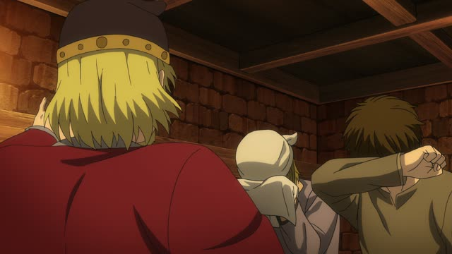
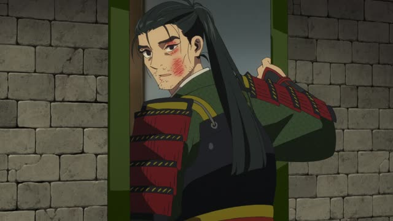
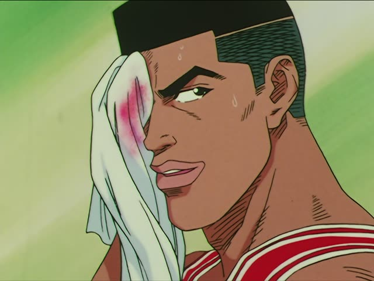
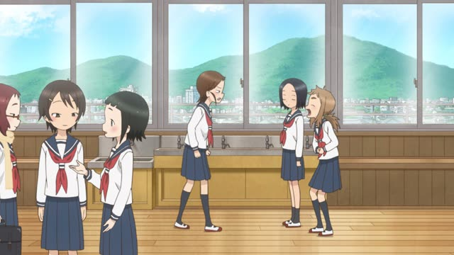

～な (Don't)

Shirokuma Cafe · Episode 11
串ごと食うなよ。
"Don't eat the skewer too." [the stick and all]
な after a verb means don't: a short, blunt order not to do something.
It goes straight after the dictionary form, nothing changes: 食う → 食うな, する → するな. On this card, it answers "what must I not do?": eat the stick.
It's rough, so you hear it between friends, from parents, on signs and in anime. The よ softens it a little. The polite way to say don't is ないでください.

Vinland Saga · Episode 15
泣くな！
"Don't cry!"
Same pattern: 泣く (cry) + な. On this card, he snaps at someone who's complaining.
Quick Examples
Your friend is about to give up on the last kilometer of a run.
諦めるな！
"Don't give up!"
諦める ("give up") + な = "don't give up!". Dictionary form + な: a blunt "don't".
CasualYour friend is nervous before a job interview.
心配するなよ。大丈夫だって。
"Don't worry. You'll be fine."
する → するな. The よ makes it friendlier.
CasualYou're about to tell everyone your friend's secret.
言うな！
"Don't say it!"
CasualA kid runs along the edge of the pool. The lifeguard shouts.
走るな！
"No running!"
CasualA sign next to a river.
ゴミを捨てるな
"Don't dump trash."
Signs use な because it's short and firm.
CasualWatch out: not every な at the end is "don't". You step outside in winter.
今日は寒いな。
"Man, it's cold today."
After an adjective, な is just a feeling, like "huh" or "man". "Don't" only comes after a verb, said like an order.
CasualWith and without
それ、食べる？
"Are you going to eat that?" Just asking.
それ、食べるな！
"Don't eat that!" You're stopping them.
Examples from Media

Dungeon Meshi · Episode 17
死ぬなよ。
"Don't die."
死ぬ + な + よ: よ softens it a little.
Goblin Slayer · Episode 2
気を抜くな。
"Don't let your guard down."
気を抜く (relax, lose focus) + な.
Last Samurai Standing · Episode 1
心配するな。
"Don't worry."
心配する + な.

Slam Dunk · Episode 15
気にするな 魚住。
"Don't worry about it, Uozumi."
気にする (mind, worry about) + な.
Vinland Saga · Episode 1
忘れるな。
"Don't forget."
忘れる + な.
Samurai Champloo · Episode 5
来るな！
"Stay away!"
来る (come) + な: "don't come".

Teasing Master Takagi-san · Season 2, Episode 2
わ… 笑うな。
"D-don't laugh."
笑う + な. She laughs at his haircut.

Shirokuma Cafe · Episode 36
って、おい！寝るな！
"Hey! Don't sleep!"
Dictionary form + な, a blunt order.
Further Reading
A Dictionary of Basic Japanese Grammar
Entry "na" · pp. 266–267
Tae Kim's Guide to Japanese Grammar
Making Requests · Negative Command